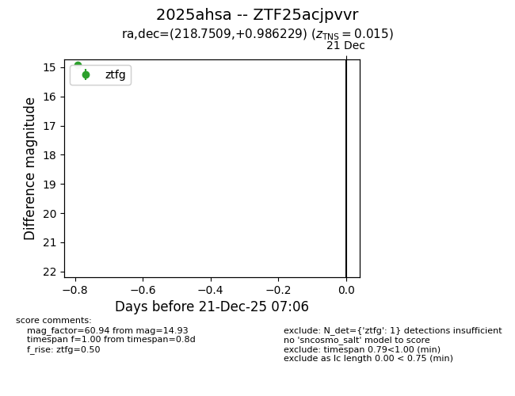
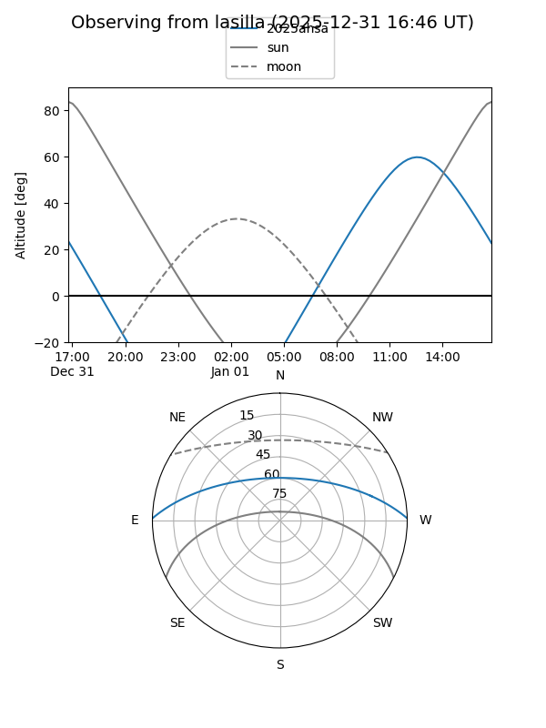
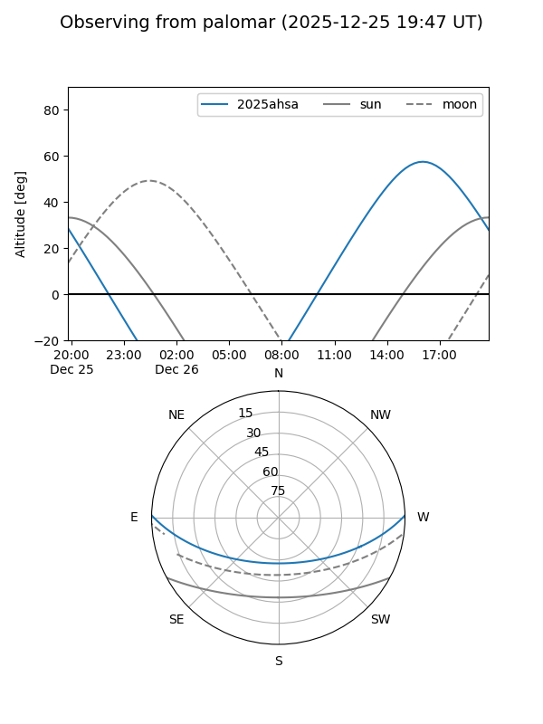
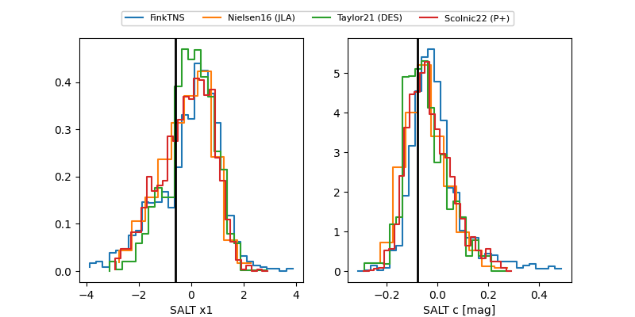

2025ahsa
Target 2025ahsa at 2025-12-26 16:17
Aliases and brokers:
FINK: fink-portal.org/ZTF25acjpvvr
Lasair: lasair-ztf.lsst.ac.uk/objects/ZTF25acjpvvr
ALeRCE: alerce.online/object/ZTF25acjpvvr
TNS: wis-tns.org/object/2025ahsa
YSE: ziggy.ucolick.org/yse/transient_detail/2025ahsa
alt names
ZTF25acjpvvr (ztf,fink_ztf)
2025ahsa (tns,yse)
Coordinates:
equatorial (ra, dec) = 218.7509,+0.98623
equatorial (HMS+DMS) = 14:35:00.21,+00:59:10.43
galactic (l, b) = (350.8078,+53.93833)
Flags:
confirmed ia
Photometry:
last ztfg=14.76, ztfr=14.93
2 ztfg, 1 ztfr detections
Lightcurve

Visibility


Additional plots
